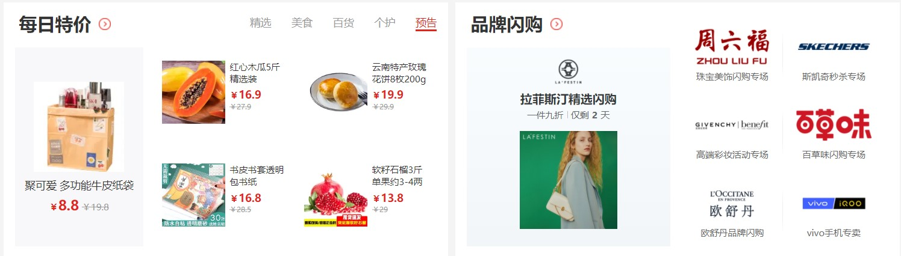
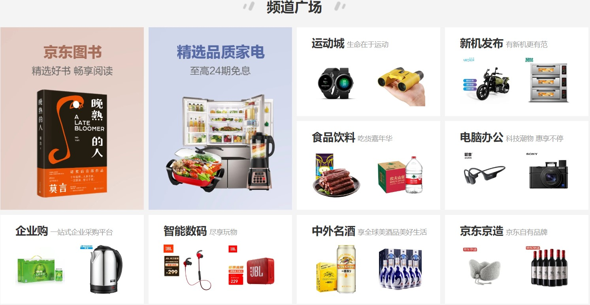
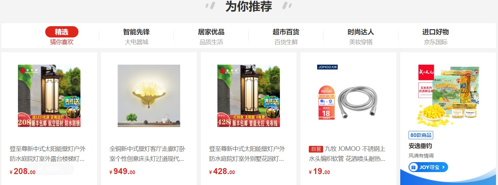
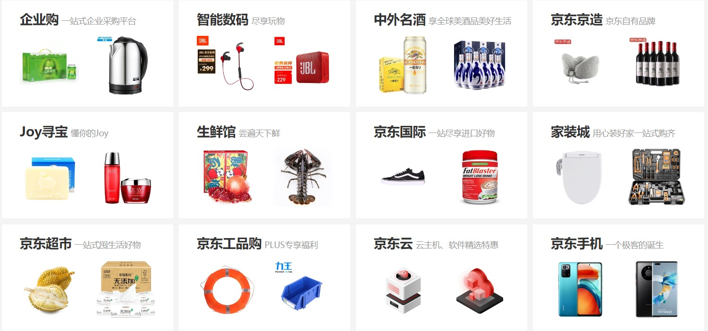
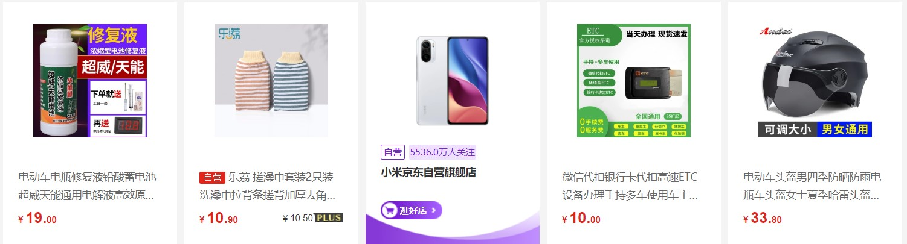

<!-- 这一部分结构是为了体现导航栏的作用 -->







<!-- 侧边导航栏 -->
<ul class="nav-left-items">
    <li class="after-line item1">
        <a href="#">京东秒杀</a>
    </li>
    <li class="after-line item2">
        <a href="#">特色优选</a>
    </li>
    <li class="after-line item3 ">
        <a href="#">频道广场</a>
    </li>
    <li class="after-line item4">
        <a href="#">为你推荐</a>
    </li>
    <li class="after-line item5">
        <!--  -->
        <a href="#">致电客服</a>
    </li>
    <li class="after-line item6">
        <!--  -->
        <a href="#">问题反馈</a>
    </li>
    <li class="item7">
        <a href="#">返回顶部</a>
    </li>
</ul>

<script>
    // 监控页面滚动
    $(window).scroll(function() {
        var scrollDistance = $(window).scrollTop();
        // console.log(scrollDistance)
        if (scrollDistance > 590) {
            $('.nav-left-items').css({
                top: '73px',
            })
        } else {
            $('.nav-left-items').css({
                top: '670px',
            })
        }

        if (scrollDistance > 2500) {
            $('.item4').addClass('active').siblings().removeClass('active')
        } else if (scrollDistance > 1900) {
            $('.item3').addClass('active').siblings().removeClass('active')
        } else if (scrollDistance > 930) {
            $('.item2').addClass('active').siblings().removeClass('active')
        } else if (scrollDistance > 600) {
            $('.item1').addClass('active').siblings().removeClass('active')
        }
    })

    // hover状态

    $('.nav-left-items li').mouseenter(function() {
        $(this).addClass('hoverStyle').siblings().removeClass('hoverStyle');
    }).mouseleave(function() {
        $(this).removeClass('hoverStyle');
    })


    $('.nav-left-items li').click(function(e) {
        e.preventDefault();

        $(this).addClass('active').siblings().removeClass('active');
        if ($(this).hasClass('item7')) {
            $('html,body').animate({
                scrollTop: '0px'
            }, 500)
        } else if ($(this).hasClass('item1')) {
            $('html,body').animate({
                scrollTop: '600px'
            }, 500)
        } else if ($(this).hasClass('item2')) {
            $('html,body').animate({
                scrollTop: '930px'
            }, 500)
        } else if ($(this).hasClass('item3')) {
            $('html,body').animate({
                scrollTop: '1940px'
            }, 500)
        } else if ($(this).hasClass('item4')) {
            $('html,body').animate({
                scrollTop: '2590px'
            }, 500)
        } else if ($(this).hasClass('item5')) {
            window.open('https://jdcs.jd.com/chat/index.action?venderId=1&entry=jd_web_jimi_jdhome')
        } else {
            window.open('https://surveys.jd.com/index.php?r=survey/index/sid/889711/newtest/Y/lang/zh-Hans')
        }
    })
</script>